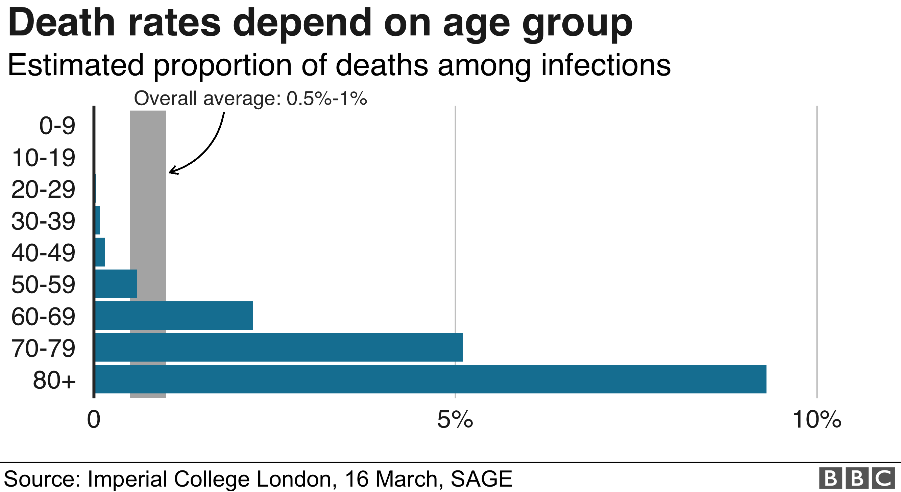
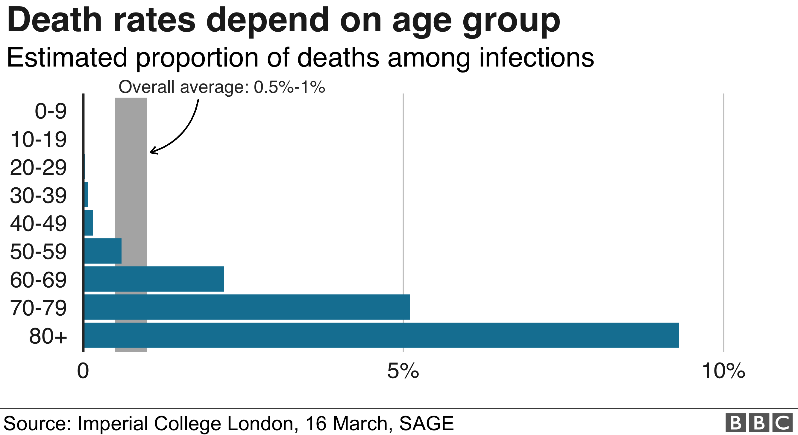
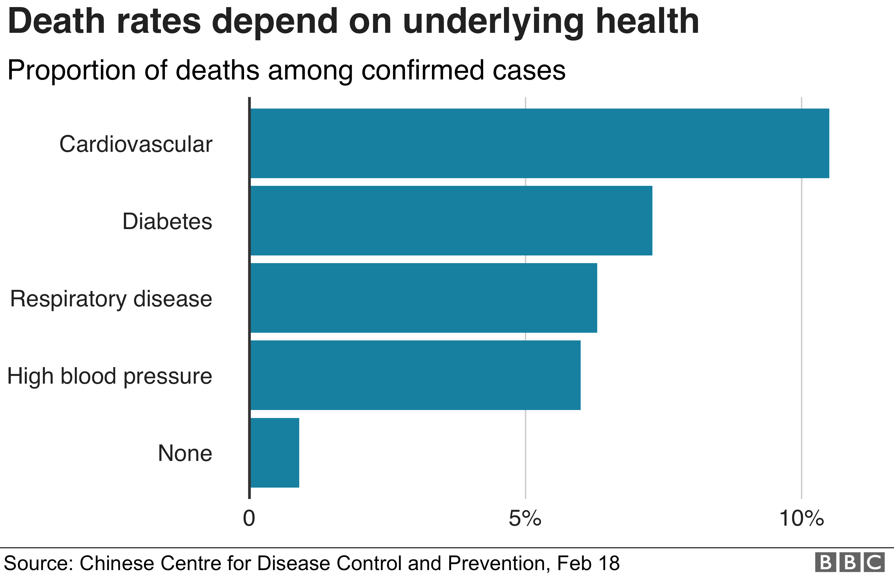
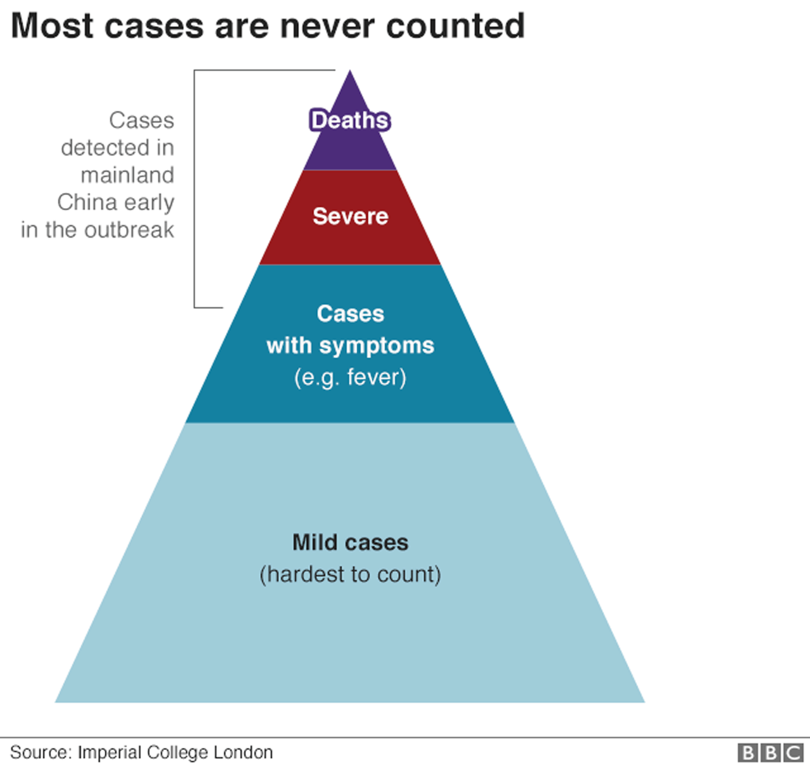
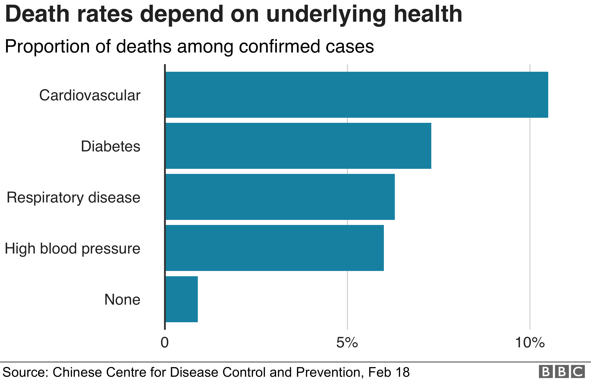
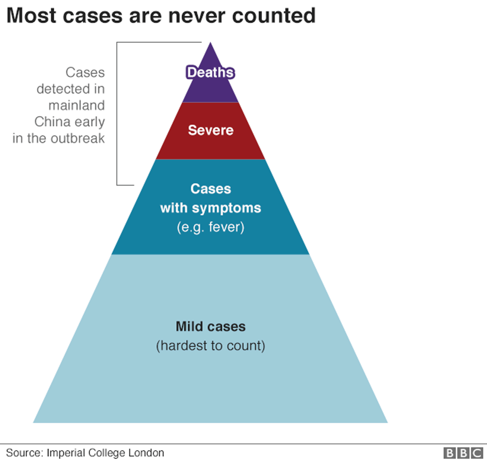

Symptoms
Reported illnesses have ranged from mild symptoms to severe illness and death for confirmed
coronavirus disease 2019 (COVID-19) cases.
These symptoms may appear 2-14 days after exposure (based on the incubation period of MERS-CoV
viruses).

Mild Symptoms
- Fever
- Dry Cough
- Shortness of Breath
You have a fever if your temperature is above 37.8C. This can make you feel warm, cold or shivery.
A sore throat, headache and diarrhoea have also been reported and a loss of smell and taste may also be a symptom.
Major Symptoms
- Trouble breathing
- Persistent pain or pressure in the chest
- New confusion or inability to arouse
- Bluish lips or face
How deadly is Coronavirus?
The proportion dying from the disease appears low (between 1% and 2%) - but the figures are unreliable.
Thousands are being treated but may go on to die - so the death rate could be higher. But it may also be lower if lots of mild cases are unreported.
A World Health Organization (WHO) examination of data from 56,000 patients suggests:
Each country has its own way of deciding who gets tested, so comparing case numbers or apparent death rates across countries can also be misleading.
Death rates also depend on a range of factors like your age and general health, and the care you can access.

Thousands are being treated but may go on to die - so the death rate could be higher. But it may also be lower if lots of mild cases are unreported.
A World Health Organization (WHO) examination of data from 56,000 patients suggests:
- 6% become critically ill - lung failure, septic shock, organ failure and risk of death
- 14% develop severe symptoms - difficulty breathing and shortness of breath
- 80% develop mild symptoms - fever and cough and some may have pneumonia
Each country has its own way of deciding who gets tested, so comparing case numbers or apparent death rates across countries can also be misleading.
Death rates also depend on a range of factors like your age and general health, and the care you can access.

The elderly and the unwell are more likely to die, if they contract coronavirus. Current estimates from Imperial College London are that the death rate is almost 10 times higher than average for those over 80, and much lower for those under 40.
We should not think it's a trivial infection for younger people, pointing out that there are some young people who have ended up in intensive care.
It's not just age that determines the risk of infections.
In the first big analysis of more than 44,000 cases from China, deaths were at least five times more common among confirmed cases with diabetes, high blood pressure or heart or breathing problems.
All of these factors interact with each other and we don't yet have a complete picture of the risk for every type of person in every location.
And even though patterns in the death rates among confirmed cases can tell us who is most at risk, they can't tell us about the precise risk in any single group.  Most cases of most viruses go uncounted because people tend not to visit the doctor with mild symptoms
That's one of the biggest reasons why the death rates among confirmed cases are a bad estimate of the true death rates: overestimating the severity by missing cases.
But you can also get it wrong in the other direction: underestimating the death rate by not taking into account those people currently infected who may eventually die. 
We should not think it's a trivial infection for younger people, pointing out that there are some young people who have ended up in intensive care.
It's not just age that determines the risk of infections.
In the first big analysis of more than 44,000 cases from China, deaths were at least five times more common among confirmed cases with diabetes, high blood pressure or heart or breathing problems.
All of these factors interact with each other and we don't yet have a complete picture of the risk for every type of person in every location.
And even though patterns in the death rates among confirmed cases can tell us who is most at risk, they can't tell us about the precise risk in any single group.  Most cases of most viruses go uncounted because people tend not to visit the doctor with mild symptoms
That's one of the biggest reasons why the death rates among confirmed cases are a bad estimate of the true death rates: overestimating the severity by missing cases.
But you can also get it wrong in the other direction: underestimating the death rate by not taking into account those people currently infected who may eventually die. 